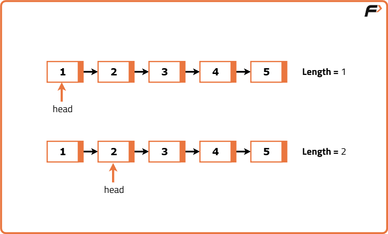
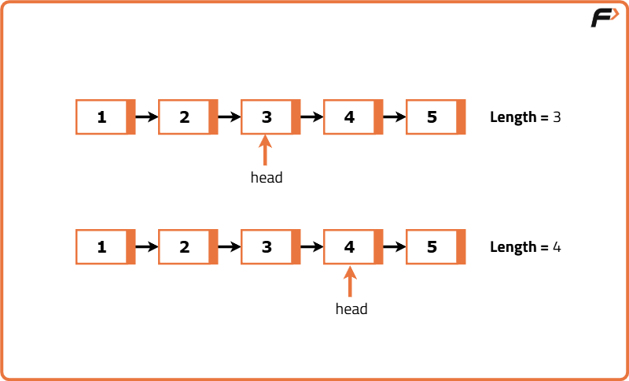
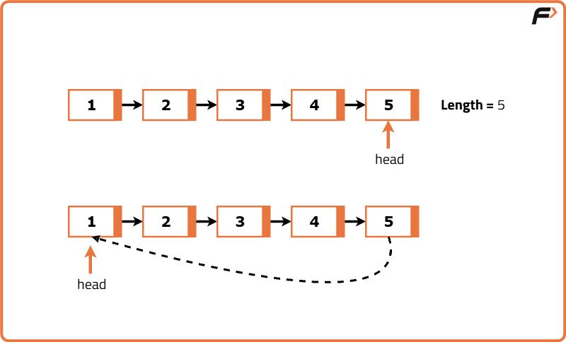
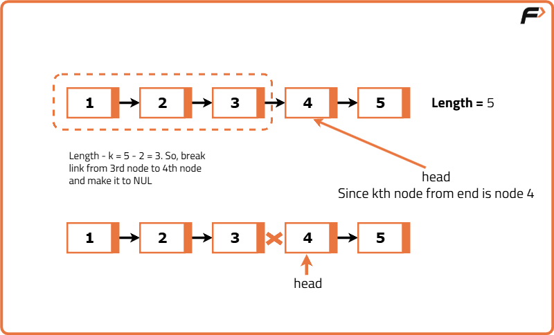

Rotate a Linked List
Problem Statement: Given the head of a singly linked list containing integers, shift the elements of the linked list to the right by k places and return the head of the modified list. Do not change the values of the nodes, only change the links between nodes.
Examples
Input : head -> 1 -> 2 -> 3 -> 4 -> 5, k = 2 Output : head -> 4 -> 5 -> 1 -> 2 -> 3 Explanation :List after 1 shift to right: head -> 5 -> 1 -> 2 -> 3 -> 4. List after 2 shift to right: head -> 4 -> 5 -> 1 -> 2 -> 3.
Input : head -> 1 -> 2 -> 3 -> 4 -> 5, k = 4 Output :head -> 2 -> 3 -> 4 -> 5 -> 1 Explanation :List after 1 shift to right: head -> 5 -> 1 -> 2 -> 3 -> 4. List after 2 shift to right: head -> 4 -> 5 -> 1 -> 2 -> 3. List after 3 shift to right: head -> 3 -> 4 -> 5 -> 1 -> 2. List after 4 shift to right: head -> 2 -> 3 -> 4 -> 5 -> 1.
Disclaimer: Here is the practice link to help you assess your knowledge better. It's highly recommend trying to solve it before looking at the solution.
Brute Force Approach
Algorithm
- If the linked list is empty or has only one node, or k is 0, return the head as-is.
- Repeat the following steps k times:
- Initialize a pointer to traverse the list from head.
- Traverse to the second-last node of the list.
- Store the last node separately.
- Make the second-last node point to null (removing the last node).
- Insert the stored last node at the beginning by:
- Pointing its next to the current head.
- Updating the head to this node.
- Return the new head of the list.
Code
#include <bits/stdc++.h>
using namespace std;
// Definition for singly-linked list node
struct ListNode {
int val;
ListNode* next;
ListNode(int x) : val(x), next(NULL) {}
};
class Solution {
public:
// Function to rotate the list to the right by k positions
ListNode* rotateRight(ListNode* head, int k) {
// If list is empty or has only one node or no rotation needed
if (!head || !head->next || k == 0) return head;
// Repeat the rotation process k times
for (int i = 0; i < k; i++) {
// Initialize two pointers to traverse the list
ListNode* curr = head;
ListNode* prev = NULL;
// Traverse to the last node
while (curr->next) {
prev = curr;
curr = curr->next;
}
// Detach the last node and place it at the beginning
prev->next = NULL;
curr->next = head;
head = curr;
}
// Return the rotated head
return head;
}
};
// Driver code
int main() {
// Creating the linked list 1->2->3->4->5
ListNode* head = new ListNode(1);
head->next = new ListNode(2);
head->next->next = new ListNode(3);
head->next->next->next = new ListNode(4);
head->next->next->next->next = new ListNode(5);
Solution obj;
int k = 2;
ListNode* result = obj.rotateRight(head, k);
// Printing the rotated list
while (result) {
cout << result->val << " ";
result = result->next;
}
return 0;
}
Complexity Analysis
Time Complexity: O(k * n),We are performing `k` rotations. In each rotation. We traverse the list to reach the second-last node (this takes O(n) time), then we adjust a few pointers (which is O(1)). So the overall time complexity is O(k * n). This approach becomes inefficient if k is large, especially with long lists, because each rotation traverses the full list.
Space Complexity: O(1), We do not use any additional data structures.
Optimal Approach
Algorithm
- Handle edge cases where the list is empty, has one node, or k is 0 — in these cases, return head as-is.
- Traverse the list to calculate its total length.
- Connect the last node to the first node, converting the list into a circular linked list.
- Calculate effective rotations as k % length to avoid unnecessary full rotations.
- Find the new tail node, which is located at the (length - k % length - 1)th position from the start.
- Set the new head to the node just after the new tail.
- Break the circular link by setting newTail.next = null.
- Return the new head of the rotated list.




Code
#include <bits/stdc++.h>
using namespace std;
// Definition of a singly linked list node
struct ListNode {
int val;
ListNode* next;
ListNode(int x) {
val = x;
next = NULL;
}
};
class Solution {
public:
// Function to rotate the linked list to the right by k places
ListNode* rotateRight(ListNode* head, int k) {
// If list is empty or has only one node, or no rotation is needed
if (!head || !head->next || k == 0)
return head;
// Initialize length and tail pointer
int length = 1;
ListNode* tail = head;
// Traverse to find the tail and length
while (tail->next) {
tail = tail->next;
length++;
}
// Make it a circular linked list
tail->next = head;
// Effective rotations needed
k = k % length;
// Traverse to the new tail (length - k - 1 steps from head)
int stepsToNewTail = length - k;
ListNode* newTail = head;
for (int i = 1; i < stepsToNewTail; i++) {
newTail = newTail->next;
}
// Set the new head
ListNode* newHead = newTail->next;
// Break the circle
newTail->next = NULL;
return newHead;
}
};
// Driver code
int main() {
// Create linked list: 1->2->3->4->5
ListNode* head = new ListNode(1);
head->next = new ListNode(2);
head->next->next = new ListNode(3);
head->next->next->next = new ListNode(4);
head->next->next->next->next = new ListNode(5);
int k = 2;
Solution obj;
ListNode* newHead = obj.rotateRight(head, k);
// Print the rotated list
while (newHead) {
cout << newHead->val << " ";
newHead = newHead->next;
}
cout << endl;
return 0;
}
Complexity Analysis
Time Complexity: O(N), We perform a single traversal to calculate the length, another to find the new tail, and one for final breaking all linear operations.
Space Complexity: O(1),No extra space is used; we just adjust pointers in place.